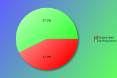
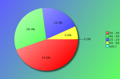
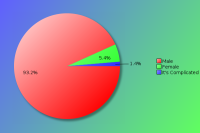
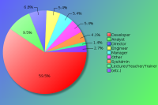
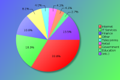
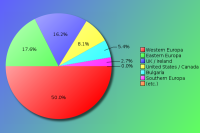

YAPC::Europe 2014 - Survey Results
The following survey results are a simple presentation of the raw data.
No attempt has been made to analyse the data and compare with previous
years. See forthcoming PDFs for more in depth analysis.
Click on pie charts to view larger image version.
Demographics
These questions will help us understand who our attendees are.
Attendees:

| Count | Description |
|---|
| 74 | Responded |
| 99 | No Response |
| 173 | Total |
| 42 | Response Percentage |
Age Band:

| Count | Description |
|---|
| 0 | under 20 |
| 15 | 20 - 29 |
| 33 | 30 - 39 |
| 21 | 40 - 49 |
| 5 | 50 - 59 |
| 0 | 60 and over |
Gender:
Although this question is optional, with your help we would like to monitor changes in attendance over time.

| Count | Description |
|---|
| 69 | Male |
| 4 | Female |
| 1 | It's Complicated |
Job Type:

| Count | Description |
|---|
| 5 | CEO/Company Director/Senior Manager |
| 0 | Non-Technical Manager |
| 4 | Technical Manager |
| 7 | Technical Architect/Analyst |
| 44 | Developer |
| 4 | Engineer |
| 3 | SysAdmin |
| 1 | Student |
| 1 | Lecturer/Teacher/Trainer |
| 0 | Human Resources |
| 0 | Researcher |
| 1 | Unemployed |
| 4 | Other |
If your position covers many roles, please base this on your most senior responsibility. Also base this on the role you perform, rather than your job title. For example, a 'QA Developer' would be a 'Developer' role, and 'Information Manager' would a Manager role (Technical or Non-Technical depending upon your responsibilites)
If 'Other' please enter your professional job role or title:
- Engineer
- internal communications, information (incl.security) and personnel development dept + deputy of senior architect
- Principal Technology Consultant
- Recruitment
- Selfemployeed
Industry:

| Count | Description |
|---|
| 2 | Automotive |
| 2 | Education |
| 1 | Engineering |
| 8 | Finance |
| 3 | Government |
| 14 | IT Services |
| 25 | Internet/Web |
| 0 | Legal |
| 1 | Logistics |
| 1 | Media/Entertainment |
| 1 | Medical/Healthcare |
| 1 | Property |
| 1 | Research |
| 3 | Retail |
| 3 | Telecommunications |
| 2 | Travel |
| 0 | Unemployed |
| 6 | Other |
If you or your company undertake work within mulitple industry sectors, please select the primary one you are currently working within.
If 'Other' please enter your industry sector:
- Fraud detection
- IT
- mobile app analytics
- Recruitment
- security
- what's an industry sector?
Region:

| Count | Description |
|---|
| 4 | Bulgaria |
| 12 | UK / Ireland |
| 37 | Western Europa |
| 13 | Eastern Europa |
| 2 | Southern Europa |
| 6 | United States / Canada |
| 0 | Asia / Australaisa |
| 0 | South America |
| 0 | Africa |
Please note this is the region you were a resident in, prior to attending the conference.
The Perl Community, YAPCs & Workshops
These questions are designed to help us understand our attendees level of involvement in the Perl community.
How do you rate your Perl knowledge?
| Count | Description |
|---|
| 3 | Beginner |
| 24 | Intermediate |
| 47 | Advanced |
How long have you been programming in Perl?
| Count | Description |
|---|
| 1 | less than a year |
| 7 | 1-2 years |
| 8 | 3-5 years |
| 13 | 5-10 years |
| 45 | more than 10 years |
How many previous YAPCs have you attended?
| Count | Description |
|---|
| 18 | This was my first YAPC |
| Attended YAPCs | 1 | 2 | 3 | 4 | 5 | 6 | 7 | 8 | 9 | 10 | 11 | 12 | 13 | 14 | 16 | total |
|---|
| YAPC::Europe | 13 | 8 | 6 | 6 | 6 | 4 | 1 | 2 | 2 | 1 | 1 | - | 3 | 2 | - | 254 |
| YAPC::NA | 5 | 2 | 3 | - | - | - | 1 | - | - | - | - | - | - | - | 1 | 41 |
| YAPC::Russia | 1 | - | 2 | 1 | - | - | - | - | - | - | - | - | - | - | - | 11 |
How many Perl Workshops have you attended?
| Count | Description |
|---|
| 14 | Never attended one |
| Attended Workshops | 1 | 2 | 3 | 4 | 5 | 6 | 7 | 8 | 9 | 10 | 11 | 12 | 13 | 14 | total |
|---|
| Austrian Perl Workshop | 1 | 3 | 1 | - | - | 1 | 1 | 1 | - | - | - | - | - | - | 31 |
| Belgian Perl Workshop | 1 | - | - | - | 2 | - | - | - | - | - | - | - | - | - | 11 |
| French Perl Workshop | 2 | 1 | 2 | 1 | - | - | - | - | 1 | - | - | - | - | - | 23 |
| German Perl Workshop | 7 | 2 | 1 | - | 1 | - | - | 2 | - | 2 | - | 1 | - | 1 | 83 |
| Italian Perl Workshop | 1 | 1 | 1 | - | - | 1 | - | - | - | - | - | - | - | - | 12 |
| London Perl Workshop | 4 | 2 | 6 | 2 | 3 | - | - | 1 | 1 | - | - | - | - | - | 66 |
| Netherlands Perl Workshop | 5 | 2 | - | 1 | 1 | - | - | - | - | - | - | 2 | - | - | 42 |
| Nordic Perl Workshop | 4 | 1 | 2 | - | - | - | - | - | 1 | - | - | - | - | - | 21 |
| Ukrainian Perl Workshop | 1 | - | - | - | - | - | - | - | - | - | - | - | - | - | 1 |
| any American Perl Workshops | 3 | 2 | - | - | - | - | - | - | 1 | - | - | - | - | - | 16 |
| any Russian Perl Workshops | 2 | - | - | 1 | - | - | - | - | - | - | - | - | - | - | 6 |
| Other Perl Workshops | 7 | 5 | 1 | 1 | - | - | - | - | - | - | - | - | - | - | 24 |
Do you plan to attend a future YAPC/Workshop?
| Count | Description |
|---|
| 65 | Yes |
| 6 | Maybe |
| 1 | Don't Know |
| 0 | No |
If no, could you tell us why?
Particularly if this is your first YAPC, we would like to understand why you would not be able or interested in attending another event like it.
- I am very, very likely to attend another YAPC, the one reason I could think of why I would not is that I had a hard time feeling relaxed outside of the talks. But that is more of a personal problem.
- The program is probably too accurate on Perl mechanics for me. I may return in a few years, to keep in touch with the latest developments
- Traveling expenses and/or distance
Are you a member of a local Perl Mongers user group?
| Count | Description |
|---|
| 55 | Yes |
| 17 | No |
If not, do you plan to find one or start one?
| Count | Description |
|---|
| 6 | Yes |
| 5 | Maybe |
| 0 | Don't Know |
| 13 | No |
What other areas of the Perl Community do you contribute to?
| Count | Description |
|---|
| 45 | I'm a CPAN Author |
| 4 | I'm a CPAN Tester |
| 26 | I'm a Perl event organiser (e.g. YAPC, Perl Workshop, QA Hackathon, local technical meetings, etc.) |
| 4 | I'm a board or committee member of a recognised Perl body (e.g. TPF, EPO, YEF, JPF, etc.) |
| 14 | I'm a Perl project developer (e.g. Rakudo, Catalyst, Dancer, Padre, etc.) |
| 18 | I have a technical blog (e.g. on blogs.perl.org or a personal blog) |
| 15 | I use or contribute to PerlMonks or other Perl related forums |
| 42 | I use IRC (e.g. #perl, #yapc, #london.pm, etc.) |
| 13 | I contribute to Perl mailing lists (e.g. P5P, Perl QA, etc) |
| 8 | other ... |
If 'Other' please enter your area of contribution
- bug reports
- I am attempting to start Weather.pm
- Only Jarkko has more core commits than me :-)
- Perl Toolchain Gang
- Regular speaker at Perl events
- StackOverflow
- write articles about Perl
- writing articles as a technical journalist
YAPC::Europe 2014
Regarding YAPC::Europe 2014 in Sofia specifically, please answer the following as best you can.
When did you decide to come to this conference?
| Count | Description |
|---|
| 40 | I'm now a regular YAPC::Europe attendee |
| 8 | After YAPC::Europe 2014 in Kiev |
| 1 | After reading a YAPC::Europe blog post |
| 4 | I was nominated to attend by manager/colleague |
| 5 | I was recommended to attend by friend/colleague |
| 2 | After reading the Perl Weekly |
| 2 | After seeing a link or advert on a Perl specific website |
| 0 | After seeing a link or advert on a non-Perl website |
| 0 | After seeing a link on Twitter, Facebook or other social media website. |
| 0 | After reading an email sent to a mailing list I was in |
| 0 | After seeing other promotions online/in the press |
| 10 | other ... |
If 'Other', what else helped you decide?
- After approval of the Grant Proposal of ACT Voyager
- After hearing from Marian Marinov while studying in Telerik Academy
- After the Czech Perl workshop
- interested in Perl people from Europe
- location, slavic language
- meetup/booking
- seeing irc users going to attend
- Sponsor
- talk accepted and company confirmed funding
- the buddies forced me ;)
Were you a speaker?
| Count | Description |
|---|
| 23 | No |
| 18 | No, but I have spoken before at similar conferences |
| 21 | Yes, and I have spoken before at similar conferences |
| 10 | Yes, and it was my first time as a speaker |
Note that "similar conferences" includes other YAPCs, as well as Linux, Open Source or large technical events such as workshops.
If you were a speaker, would you have been able to attend if you hadn't been speaking?
| Count | Description |
|---|
| 34 | Yes |
| 6 | No |
If you weren't a speaker, would you consider speaking at a future conference?
| Count | Description |
|---|
| 36 | Yes |
| 2 | No |
| 11 | Ask me later |
Were there any speakers not present, who you would like to have seen at the conference?
| Count | Description |
|---|
| 34 | Yes |
| 23 | No |
If 'Yes', which speakers?
| Count | Description |
|---|
| 17 | Larry Wall |
| 10 | Damian Conway |
| 3 | Ricardo Signes & Tim Bunce |
| 2 | Patrick Michaud, Mark Jason Dominus & brian d foy |
| 1 | Tatsuhiko Miyagawa, Gerda Shank, Paul Fenwick, Charles Stross, Leo Lapworth, Sebastian Riedel, Steffen Ullrich, Rene becker, Aaron Crane, Adam Kennedy, smylers, Audrey Tang, Tobias 'FROGGS' Leich, Arthur Axel "fREW" Schmidt, David Golden, Tomas Doran, Dave Cross, Simon Peyton Jones, Moriz Lens, Stevan Little, Jesse Vincent & John Napiorkowski |
Additional comments:
- perl core team, perl future visioners, incl, Larry ;-)
- Quite a few London lot were missing
- Regretted Larry's absence; still haven't managed to see Conway or Dominus in person.
- Simon Peyton Jones (he doesn't do any Perl, but he's so pleasant to listen to)
- There are many more interesting speakers in our community. But them not being present brought more attention to new speakers: that's a good thing!
- Would have been nice to actually see Larry. Hope he gets well soon.
What kinds of talks would you prefer at future conferences?
| Count | Description |
|---|
| 0 | More beginner level talks |
| 10 | More intermediate level talks |
| 22 | More advanced level talks |
| 30 | It's about right |
| 8 | No preference |
Are there any topics you would specifically like to see featured?
- (big) data, UI/usability, high end networking, automation/devops, visualization, functional programming, evented/async
- * More talks on the Perl internals in a non-threatening, engaging manner
* More talks on hacking scientific data
* More talks on hacking hardware
- any non-perl related talks, also I would love to see some hard core kernel hacking, embedding the interpreter, XS magic
- applications written in Perl mentioning the used CPAN modules
- async stuff, distributed stuff,
- Bioinformatics
- Fewer talks about things that happened to be done in Perl (and with very little Perl or programming content), and more talks about Perl programming and programming / software dev in general.
- GUI, handling abstraction
- How to use Perl with other languages/frameworks
- I think a tutorial track would be good, especially for much-raved about tech like DBIC, Moose, various web frameworks
- Large scale perl systems, managing legacy perl
- Links from perl modules to Linux packages. Generally speaking: how to spread perl modules and / or applications to a wider audience though Linux distributions.
- Management related topics.
- Math
- more security and network related talks
- More talks about general principles and concepts rather than specific implementations/modules
- More war stories ("this is what we did. this is what worked. this is what went wrong. this is what we learned")
- p5p introduction (who is there, how to get involved)
- Perl 5 compiler guts, especially embedding Perl 5
- Perl 6
- perl IDE
parallelism
perl & patterns
- Perl internals, XS
- Perl6, telecommunication and automatization
- Practical perl6 projects
- Success stories from companies other than in ISP/web hosting space. GoodData, for example :-)
- Success stories, "war" stories (showing actual solutions to real problems people and companies face)
- testing, system administration, automation
- We should try to implement a proper beginner track again. Pass the slides on from conference to conference provide a farm system to develop the next generation of speakers.
- Web site scaling; distributed job queues; continuous delivery; more Plack, PSGI, and web framework talks; community, especially NA+EU+JP collaboration; more on testing code; more on awesome Perl features and projects.
- XS, project management, cat herding/social management
How do you rate the conference?
How would you rate your overall satisfaction of the following areas of the conference?
| Choices | 1 | 2 | 3 | 4 | 5 |
|---|
| Newsletters/Updates | 12 | 28 | 17 | 6 | - |
|---|
| Website | 12 | 33 | 19 | 6 | - |
|---|
| Registration process | 37 | 25 | 7 | - | - |
|---|
| Directions/Maps | 26 | 27 | 12 | 2 | - |
|---|
| Content of the talks | 26 | 38 | 6 | - | - |
|---|
| Schedule efficiency | 34 | 24 | 11 | - | - |
|---|
| BOFs | 12 | 7 | 5 | 2 | - |
|---|
| Social events | 40 | 22 | 3 | 1 | - |
|---|
| Parking | 5 | 2 | 1 | - | - |
|---|
| Facilities | 30 | 30 | 4 | 2 | - |
|---|
| Food service | 8 | 43 | 17 | 3 | - |
|---|
| Accommodation | 32 | 28 | 3 | - | - |
|---|
| Staff | 58 | 12 | - | - | - |
|---|
| Overall experience | 44 | 24 | 2 | - | - |
|---|
| Value for price | 47 | 22 | 1 | - | - |
|---|
Key:
1 = Very Satisfied
2 = Somewhat satisfied
3 = Somewhat un-satisfied
4 = Very un-satisfied
5 = N/A
Conference Attendance
In order to help future organisers gauge an appropriate conference fee, how much would you (or your company) have paid for a conference ticket? Feel free to provide an answer for all rates, where corporate rate would be paid for by your company (including a Master Class place), standard rate would be the regular price paid by attendees in paid employment, and lastly the concession rate for anyone who holds proof that they are in fulltime education or are unemployed.
Corporate Rate:
| Count | Fee |
|---|
| 3 | € 100 |
| 3 | € 150 |
| 6 | € 200 |
| 1 | € 200+ |
| 4 | € 250 |
| 4 | € 300 |
| 1 | € 400 |
| 8 | € 500 |
| 1 | € 600 |
| 1 | € 700 |
| 4 | € 1000 |
Standard Rate:
| Count | Fee |
|---|
| 1 | € 50 |
| 2 | € 70 |
| 1 | € 75 |
| 1 | € 80 |
| 1 | € 80-100 |
| 1 | € 99 |
| 27 | € 100 |
| 1 | € 110 |
| 1 | € 125 |
| 3 | € 150 |
| 4 | € 200 |
| 1 | € 250 |
Concession Rate:
| Count | Fee |
|---|
| 1 | € 10 |
| 3 | € 20 |
| 4 | € 30 |
| 1 | € 35 |
| 2 | € 40 |
| 15 | € 50 |
| 1 | € 50-100 |
| 1 | € 60 |
| 1 | € 70 |
| 2 | € 75 |
| 1 | € 100 |
Would you pay more for a YAPC if we could exclude sponsorship advertising?
| Count | Description |
|---|
| 14 | Yes |
| 45 | No |
If so, how much?
| Count | Fee |
|---|
| 1 | € 30 |
| 2 | € 50 |
| 1 | € 90 |
| 2 | € 100 |
| 2 | € 150 |
| 1 | € 175 |
| 1 | € 400 |
| 1 | € 1000 |
How did you pay for the conference fee?
| Count | Description |
|---|
| 19 | N/A - I was a speaker |
| 2 | N/A - I was a sponsor |
| 28 | My company paid |
| 17 | I paid out of my own pocket |
| 0 | I wasn't able to attend |
If your employer didn't send you, did they give you time off to attend?
| Count | Description |
|---|
| 24 | Yes |
| 11 | No |
Does distance prevent you from being able to attend some YAPCs?
| Count | Description |
|---|
| 31 | Yes |
| 33 | No |

{kind=link}
{kind=link}
{kind=link}
{kind=link}
{kind=link}
{kind=link}